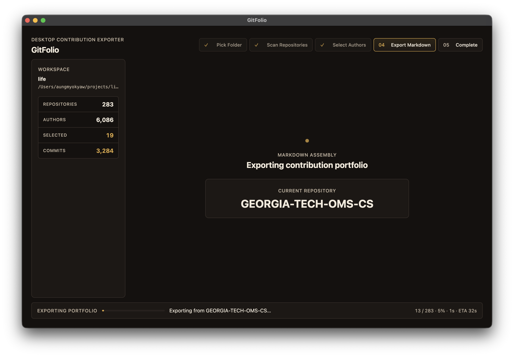
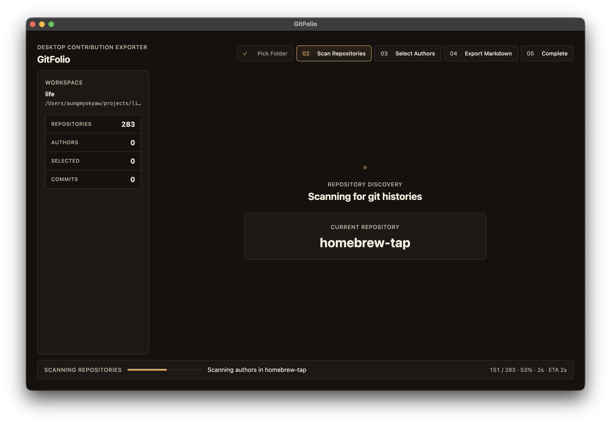
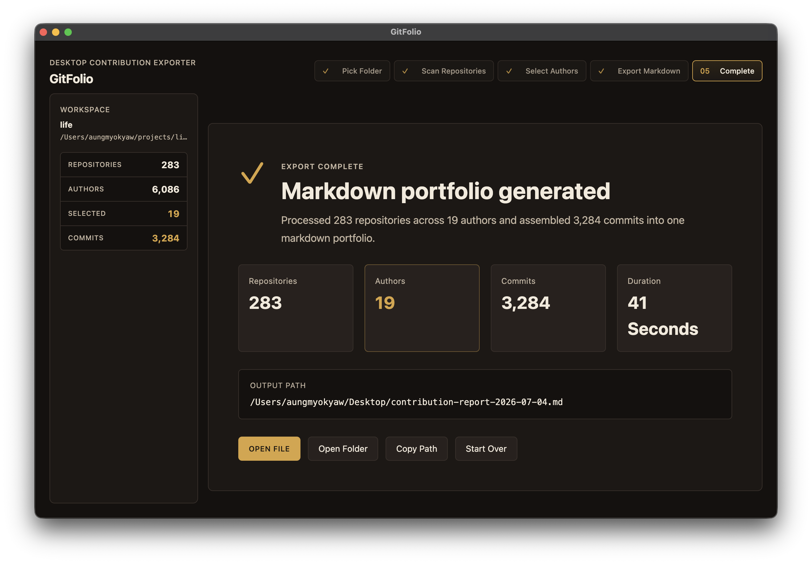

Pick a workspace
Point GitFolio at a folder that contains your cloned repositories.
Desktop contribution exporter
GitFolio scans your cloned repositories, groups author identities, and exports a readable Markdown portfolio with commits and diffs.

The problem
Useful work gets spread across repos, emails, branches, teams, and years. When resume, interview, or review season arrives, the evidence is still there, but collecting it by hand turns into archaeology.
GitFolio turns that history into one readable artifact without asking you to upload private repositories or rewrite commit logs by hand.
Workflow
Point GitFolio at a folder that contains your cloned repositories.
Find `.git` directories, count histories, and prepare the author index.
Group multiple names and emails so scattered commits can be exported together.
Generate a portable report organized by repo, chronology, commits, and diffs.


The artifact
The final file is designed for reading, editing, and sharing only after you decide what belongs in the packet.
## Repo: api-gateway
### 2026-06-19 - a14f09c
feat: add contribution export summary
#### src/exporter.ts
```diff
+ const selectedCommits = commits.filter(matchesAuthor)
+ writeMarkdownReport(selectedCommits, outputPath)
```
Generated files, binaries, and oversized diffs are skipped or capped.Local-first trust
GitFolio reads repositories you already cloned and exports to a path you choose.
The workflow is a focused desktop utility, not another hosted workspace.
The output is a plain `.md` file you can edit, trim, archive, or attach.
Use cases
Review actual shipped work before rewriting bullets or project summaries.
Refresh implementation details, tradeoffs, and examples from real commits.
Assemble a contribution packet from a review period across many repositories.
Keep a durable record of what changed, why it mattered, and where it landed.
Install
Use GitHub Releases when a packaged macOS build is available. To build from source, make sure Bun 1.4+ is installed and git must be available on your PATH.
git clone https://github.com/AungMyoKyaw/GitFolio.git
cd GitFolio
bun install
bun run package